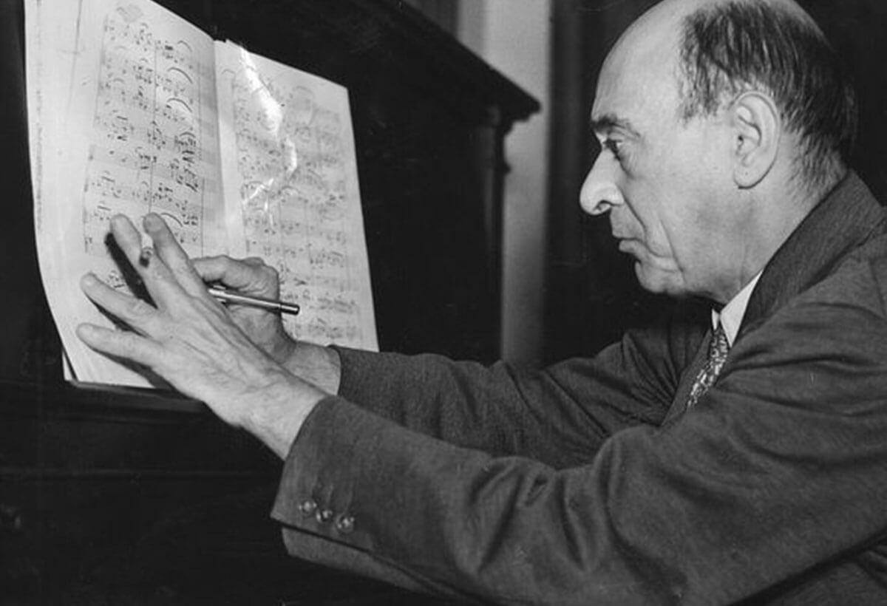
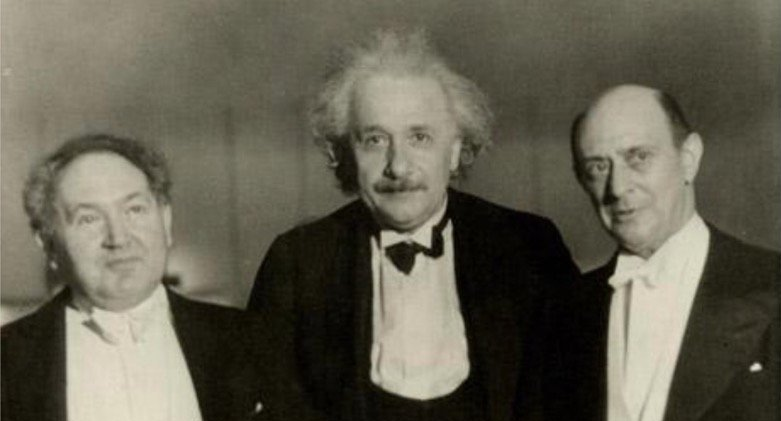

自学成牛的作曲家——勋伯格
阿诺德·勋伯格（Arnold Schoenberg），可以说是现代音乐的开山鼻祖，一位历史级、世界级的作曲家。但你可知道他是自学成牛的？本文将谈谈他的这部分经历。
他有多牛？
什么样的作曲家称得上牛逼？可能得满足以下条件：
- 作曲技术精湛，创作了一些高质量的作品，这些作品被世界级的演奏家、乐团演奏。
- 有自己的一套作曲技法，这套技法对其他作曲家或音乐的发展有一定影响。
- 音乐史书上会提到 TA，TA 的作品和技法会被音乐学院的学生学习、研究。
大众比较熟悉的巴赫、贝多芬、肖邦等作曲家均符合这些条件，勋伯格也不例外。
勋伯格最醒目的标签可能是革新者，他提出了非常革命性的作曲技法体系，打破了过去几百年的传统，对现代音乐的发展影响巨大。有媒体称他为「音乐界的爱因斯坦」。
他俩还有过来往。上图中间为爱因斯坦，右边为勋伯格。
除此之外，勋伯格还是一位音乐理论家，他从大量的古典音乐中识别出了一种称为乐句（sentence）的结构，这种结构对于作曲的教学和理论研究都非常重要；他还是一位好老师，学生中有不少同样牛逼的作曲家；他还写了很多作曲教材，其中一些现在依然在出版。
而勋伯格基本上是自学成牛的，这在古典音乐领域非常非常罕见，更别说他这种级别的了。
下面是我对他经历的一些提炼，相信这些内容对自学者会有一定启发。
非常强烈的兴趣
做出伟大成就的人往往对自己所做的事情有着非常浓烈的兴趣。勋伯格就是一个很好的例子。
勋伯格的传记中有很多细节可以体现出他对音乐的热爱：
很早就自发地创作：勋伯格八岁的时候开始学小提琴，没多久就开始以老师教他演奏的曲子为模板开始创作小提琴二重奏，还在课上演奏。
在音乐上有着不甘平庸的傲气：小勋伯格读了莫扎特的传记之后，开始模仿莫扎特，试着不用乐器辅助来作曲。
澎湃的创作欲望：读他的传记你会发现，勋伯格不停地在创作音乐。初中和好友组乐队的时候在创作，喜欢上自己表妹的时候写音乐给人家，在书上了解了奏鸣曲的结构就尝试自己写……
生活被音乐占据，与音乐沾边就开心：勋伯格十五岁的时候为了家庭，不得不去银行当职员。有一天他高兴地回家告诉大家老板破产了，再也不用去银行了，他同时下决心只做和音乐有关的工作。勋伯格七十五岁时说自己一生有 90% 的时间都花在音乐上。
并不优越的家庭环境
与勋伯格兴趣形成对比的是他的家庭环境。
勋伯格的父母都喜欢唱歌，但对勋伯格喜欢的音乐并不感兴趣。就好比你喜欢摇滚，你爸妈爱唱红歌。他的父亲希望勋伯格长大能成为工程师。
因为父亲肺气肿去世，勋伯格在十五岁时成为一家之主，家里有妈妈、妹妹、弟弟，两个父母双亡的堂妹。他不得不离开学校去银行当职员。
银行老板破产后，勋伯格决定投身音乐，家里亲戚除了一位叔叔都反对他，说他给母亲添烦恼，一个劲地劝他去工作。
勋伯格之后找了抄写乐谱的工作，一直不太有钱，三十岁时还因为经济问题和老婆孩子住过朋友父母家里。
并非早慧的天才
勋伯格并不符合大众文化中或者一些电影中的那种早慧天才形象。
比如传记中对于学生时代的勋伯格的描述是，很狂，很野，不配合，学业能力一般（average scholastic ability）。
提到他的十几岁组乐队时的演奏水平时，说的是有个性，很强的音乐性，但是技术上并不精湛（never technically wonderful）。
勋伯格学习音乐的进度可以说非常缓慢低效。他九岁开始作曲，但是直到十一岁认识了一位好友，才知道有乐理这种东西，又到了十八岁才从百科书上了解到了奏鸣曲的结构，二十一岁时结识了另一位作曲家朋友，从他那里又学了一些基本的作曲技术。
考虑到这一点，再看看勋伯格最后所获得的成就，你会意识到当你将一生投身于某个炙热的兴趣时，缓慢和低效都是暂时的。作曲专业的学生花两三年就可以掌握勋伯格花了十几年所掌握的知识和技术，但是未必有他这样的成就。兴趣就像放大器一样，将资源和智力相差不大的人之间的距离拉到惊人的巨大。
尊重传统
勋伯格的音乐哪怕对于现在的普通大众来说，也非常现代，非常地不传统。在勋伯格那个时代就更不用说了，他的作品上演时评论界引起了很大的波澜。
但是有意思的是，勋伯格非常尊重传统，认为自己的音乐扎根于传统。他研究了大量的古典音乐，十分推崇莫扎特、贝多芬、勃拉姆斯等人的作曲技法。听一听他在发展自己技法之前写的音乐：
String Quartet No. “0” in D major
他还写过一些教授传统作曲技法的教材。据勋伯格自己说，许多本来很讨厌他的敌对者在看了他写的教材之后，意识到他并非哗众取宠的「民科」，居然开始敬佩他。
就像毕加索一样，在创新之前，他的传统功底其实非常扎实。
有两点想法：
第一，如果你去读作曲专业，学习、分析前人的作品必不可少。这个过程对于自学者来说同样重要，他人的作品一定程度上扮演了缺席的老师的角色，可以给对领域还比较生疏的你一个支架。另一位也很牛逼的日本作曲家武满彻也有类似的经历。
第二，人们总是向往创造力，但是有时会把创造力看成一种巧劲，无形之中将它与学习知识对立起来，尤其是传统教育还特别强调教知识。但是伟大的创新者往往对本领域已有的知识有非常好的把握，创新只是水到渠成。勋伯格就是一个很好的例子。
社会支持
读勋伯格传记另一个感受是，他一直都能认识良师益友，有贵人相助。
在作曲技术还不成熟的早期，勋伯格结交了一些对他影响很大的朋友。
比如中学时认识了 Adler，通过他知道了乐理这种东西，他俩再加上自己的一位亲戚，三人组了乐队。Adler 还激发了他对诗歌和哲学的兴趣。
后来又结识了优秀且人脉更广的作曲家 Zemlinsky，教过勋伯格一些作曲技术，这是勋伯格唯一接受过的一点正式音乐教育。而且只过了四年，Zemlinsky 在看到了勋伯格的一部重要作品之后，就觉得这位曾经的学生已经是他的老师了。Zemlinsky 对勋伯格更多的是资源和精神上的支持，比如将勋伯格的作品拿给勃拉姆斯看。勃拉姆斯通常对初学者的作品不感兴趣，但是看了勋伯格作品后却表示愿意给他经济上的支持。又比如在勋伯格因为作品太激进而被拒演时支持他。勋伯格之后还娶了人家妹妹……真是爱情事业双丰收。
在有了成熟的作品之后，勋伯格还受到了一些年长作曲家的赏识和帮助。比如上面提到的勃拉姆斯，以及之后遇到的斯特劳斯、马勒，这些都是和勋伯格一样牛逼的，世界级、历史级、教科书级的作曲家。
这些经历也说明了，当你有了优秀的作品之后，牛逼的人不会在乎你的出身，而会因为作品重视你。
参考文献
- MacDonald, M. (2008). Schoenberg (2nd ed). New York: Oxford University Press.
- Auner, J. H., & Schoenberg, A. (2003). A Schoenberg Reader: Documents of a Life. New Haven: Yale University Press.
- Schoenberg, A. (2014). Style and Idea. Philosophical Library/Open Road.